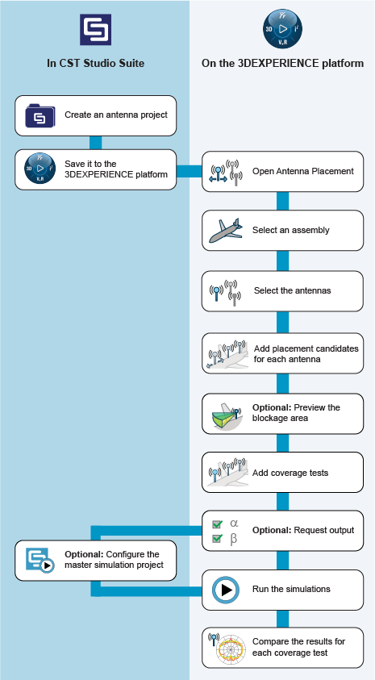
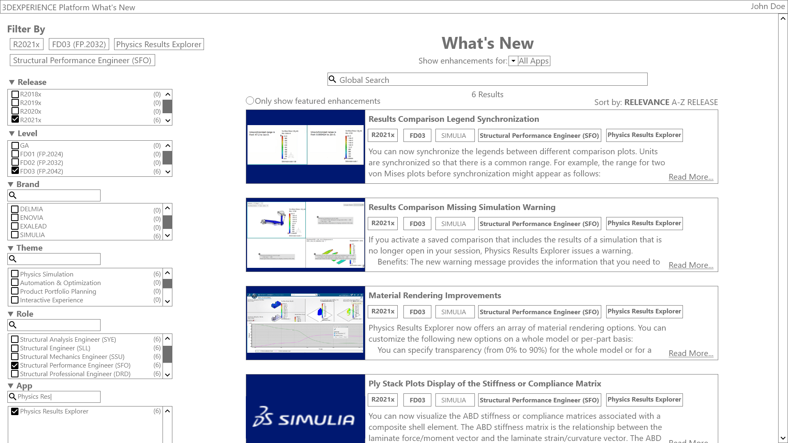
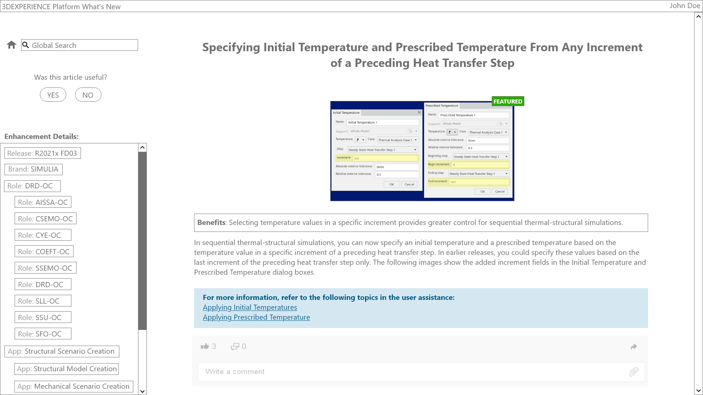

Professional
I am an avid wearer of hats, with skills in graphic and industrial design, technical and UX writing, and engineering.
I work as a User Assistance Developer at Dassault Systemes.
I am an avid wearer of hats, with skills in graphic and industrial design, technical and UX writing, and engineering.
I work as a User Assistance Developer at Dassault Systemes.
Workflow diagrams help a user to understand the intended workflow with a set of multiple apps. I create these for user guides as well as examples and tutorials.
An overview of a Simulation Example: a tutorial that guides the user through an applied simulation workflow:

A simplified example of an application of SIMULIA automation and optimization apps:

Workflow for using CST along with the Antenna Placement app on the 3DEXPERIENCE platform:

I helped develop low-fidelity mockups of a few ideas for how to navigate What's New information. Mockups were done in Adobe XD.

